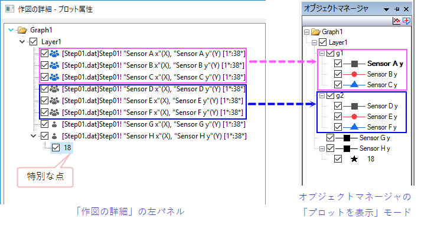
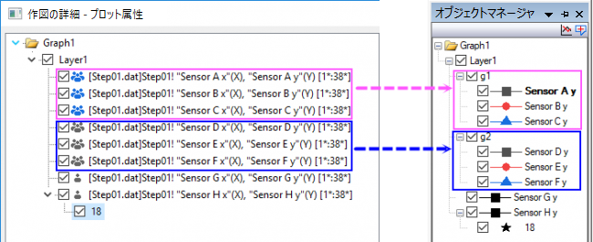

ページ / レイヤ / プロットの階層
Page-Layer-Plot-Hierarchy
すべてのOriginグラフウィンドウは、組込み、オンラインまたはユーザが修正したグラフテンプレートを使って作成されます。 すべてのOriginグラフウィンドウの内容はページ>レイヤ>プロットの階層構造になっており、ページは最上位のレベルです（作図の詳細ダイアログとオブジェクトマネージャウィンドウで、Graph1アイコンで表されます）。プロットレベルの下に特別なポイントを追加することもできる。

一般に
- ページには少なくとも1つのグラフレイヤが含まれている必要があります。複数のレイヤを含めることもできます。
- レイヤは基本的に1つ以上のデータプロットを含みます。プロットはグループ化され、グループ化インジケータ（とが作図の詳細に交互に、g#がオブジェクトマネージャに表示されます）とともに表示されます。

- データプロットは、基本的に1つ以上のデータポイントで構成されます。(2Dグラフでは、データポイントは1セットのXYデータまたはエラーバーやデータラベル、3DグラフではXYZの3要素を表します。)
- 特別な点はグラフのプロット後に手動で作成されます。1つのプロットに複数の特別な点を追加できます。
ページ>レイヤ>プロットの階層構造にある各オブジェクトは、別のオブジェクトや属性と結びついています。どのオブジェクトや属性がページ
> レイヤ > プロットの階層構造の各レベルと論理的に結びついているかを知っておくと役立ちます。各レイヤとプロットの左側にチェックボックスがあり、それぞれを表示(チェック)したり非表示に(チェック無し)にできます。
例えば、
- グラフページの大きさを変更し、グラフをエクスポートした画像サイズの寸法を正確にするには、グラフページの属性を編集する必要があります。
グラフページに関する説明は、『グラフページの要素を編集する』をご覧下さい。
- グラフの軸スケールを編集する場合、軸はグラフレイヤの一部であることを知っておくと役に立ちます。レイヤは、移動可能で、大きさを変更でき、(1)XおよびY(任意でZ)からなる1セットの座標軸、(2)1つ以上のデータプロット、(3)軸タイトル、テキストラベル、描画オブジェクト、で構成されています。グラフレイヤに関する説明は、『グラフレイヤの要素を編集する』をご覧下さい。
- 例えば、散布図のシンボルの形状を変更する場合、シンボルの形状はプロットの属性であることを知っておくと役に立ちます。
グラフプロットに関する説明は、『グラフプロットの要素を編集する』をご覧下さい。
グラフページの属性は、そのページの中のすべてのグラフレイヤに適用され、グラフレイヤの属性は、そのグラフレイヤにあるすべてのプロットに適用されます。
プロットのレベルにおいては、1つのデータポイントのみを編集している場合を除いて、プロットの属性がそのプロットのすべてのデータポイントに適用されます。（2D散布図と線+シンボルにのみ適用されます）。
また、Originには、再描画スピードを高速にしたりグラフの表示をより正確にするための表示モードがあります。利用可能なページビューモード：｢スピード｣対｢正確さ｣
で詳細を確認してください。